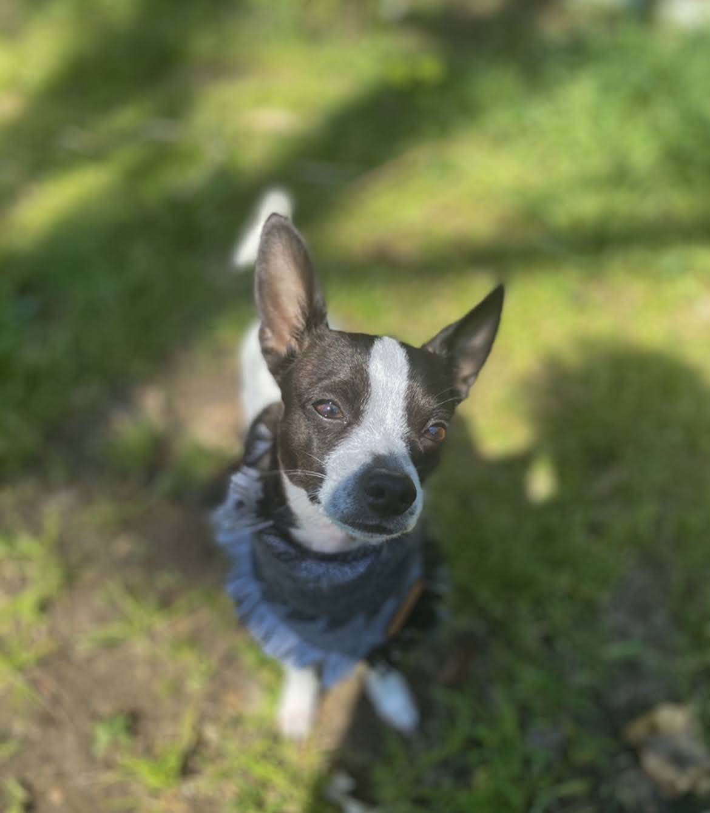
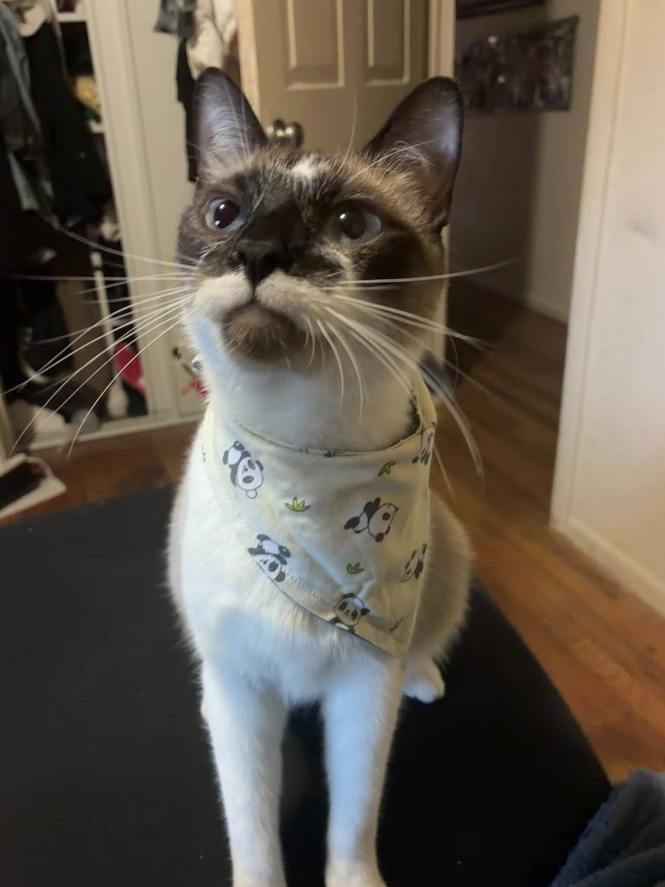
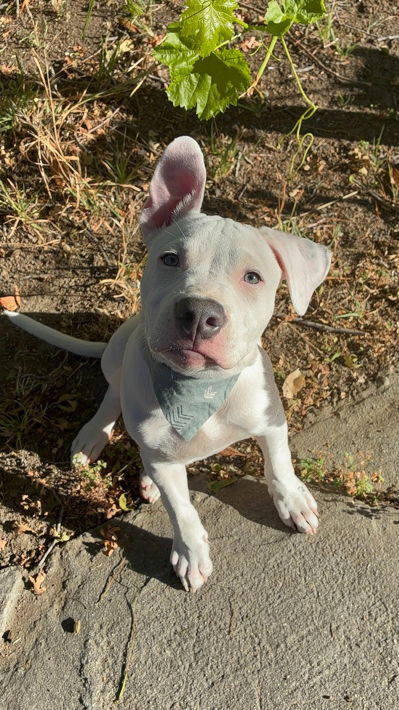

My First Website
This is my very First website on which you can find, My projects, About me,fun facts about my pets and their personalites and more..... But First lets introduce my pets



This is my Chihuahua his name is Kilo
Fun facts about Kilo
- Kilo was born June 02 2018
- He loves to chew bones and bark at people
- He is very small but full of energy
- Kilo was rejected by his mom at 2 weeks old and had to be bottle-fed
This is Kilo, he is a small black and white Chihuaha who I have owned For 8 years. He is very energetic, protective and loves to model the thousands of bandanas i put on him. Kilo was given to me when one of my bestfriends dog had puppies and the mother regected him from the litter. Overall Kilo has been through thick and thin with my family and even though he can be a bit annoying with his barking I wouldnt trade him for the world.
This is my Cat his name is Dean
Fun facts about Dean
- Dean was born February 15 2025
- He loves to play with toys and hide my paint brushes and pencils
- He is very Cuddly and loves to snuggle
- Dean loves to supervise all the other humans and pets in the household
This is Dean, Dean is named after the character Dean from the TV show "Supernatural". He is a very affectionate cat towards girls and loves to play with small stuffed toys. We like to call Dean the "supervisor" because he walks around the house like he owns it. One of Deans nicknames is Punk uh Punk because he wont hesitate to slap someone with his paws. He can be a bit rebellious and loves to get into mischief.
This is my Pit mix Philly
Fun facts about Philly
- Philly was born March 17 2026
- He loves to play fetch and go on long walks
- He is very loyal and protective
- Philly's favorite thing to chew on is sticks and stuffed toys
This is Philly, he is a Pit mix who is half Dogo arengtino. My family and I have owned him for 5 months. He is very energetic, He loves to play Fetch, and is always by my side. Philly has a strong bond with my Dad who is his favorite person and is known for his protective nature. Even though Philly looks intimidating he is very goofy and cuddly. So far Philly is learning new tricks and is becoming a well-behaved dog in the family.
Back to top